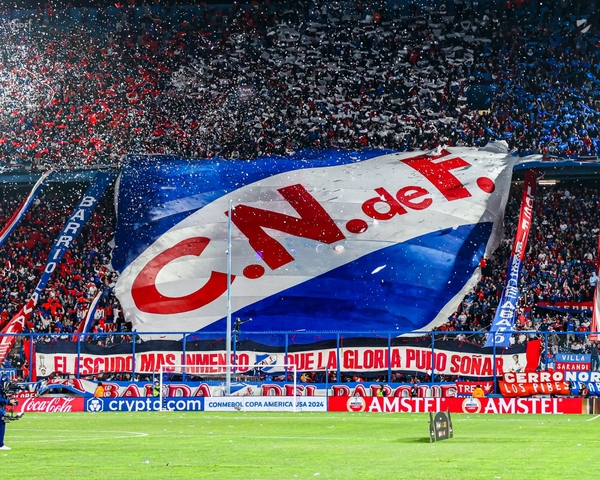

|

|
El Club Nacional de Football es una institución deportiva uruguaya. Fue fundado el 14 de mayo de 1899 en Montevideo, por iniciativa de jóvenes estudiantes de la época, con la intención de consolidar una institución de fútbol para uruguayos criollos frente al predominio de clubes y practicantes extranjeros europeos de este deporte, particularmente ingleses y alemanes, siendo considerado así el primer equipo criollo del país y uno de los primeros clubes fundados por nacionales en América.
Si bien adquirió un carácter polideportivo que le llevó a incursionar en varios deportes, es en el fútbol donde obtuvo su principal gloria deportiva, constituyendo una de las entidades más laureadas y reconocidas del mundo, siendo galardonado a nivel futbolístico nacional e internacional. |
| Nacional está identificado con los colores blanco, azul y rojo, tomados de la Bandera de Artigas. Oficia de local en el Estadio Gran Parque Central, de su propiedad, ubicado en el barrio La Blanqueada, donde el 13 de julio de 1930 las selecciones de Bélgica y Estados Unidos disputaron uno de los dos primeros partidos en la historia de los mundiales y en donde hicieron sus debuts mundialistas las selecciones de Argentina y Brasil. También fue sede única de las ediciones 1923 y 1924 de la Copa América. |